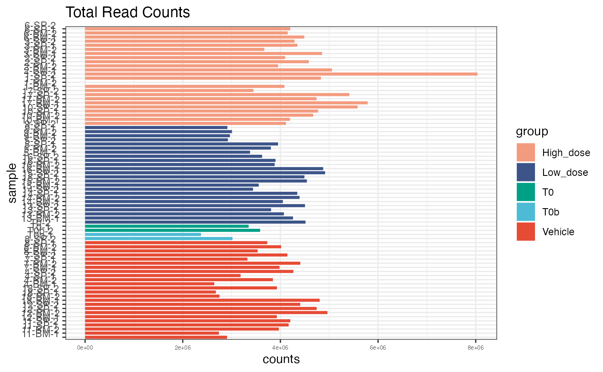
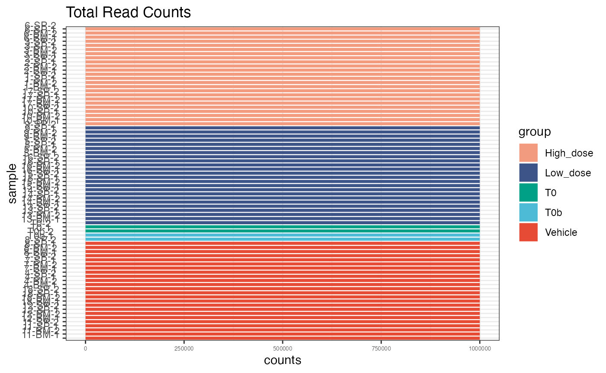
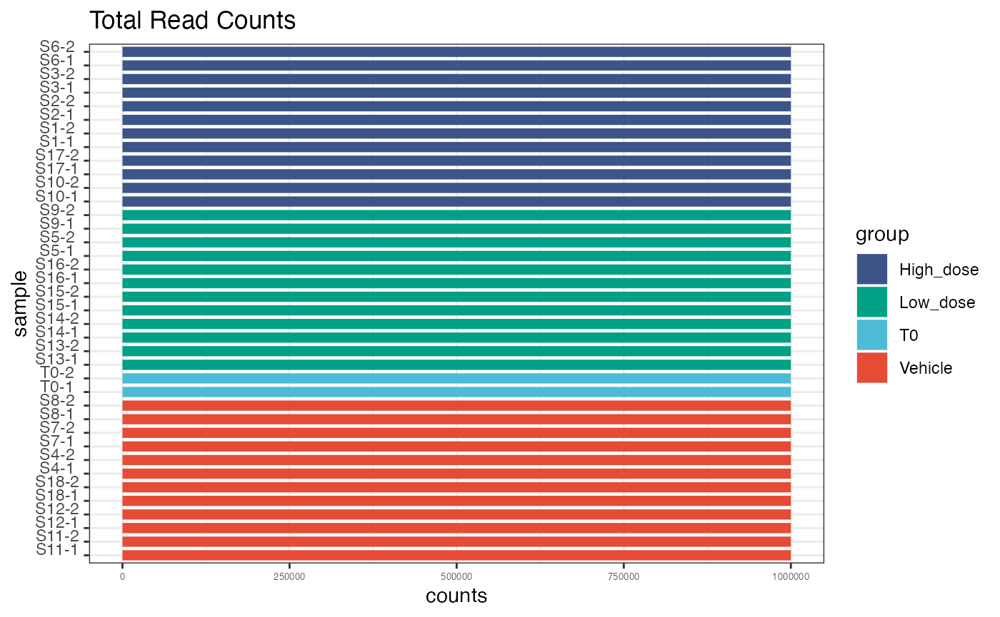
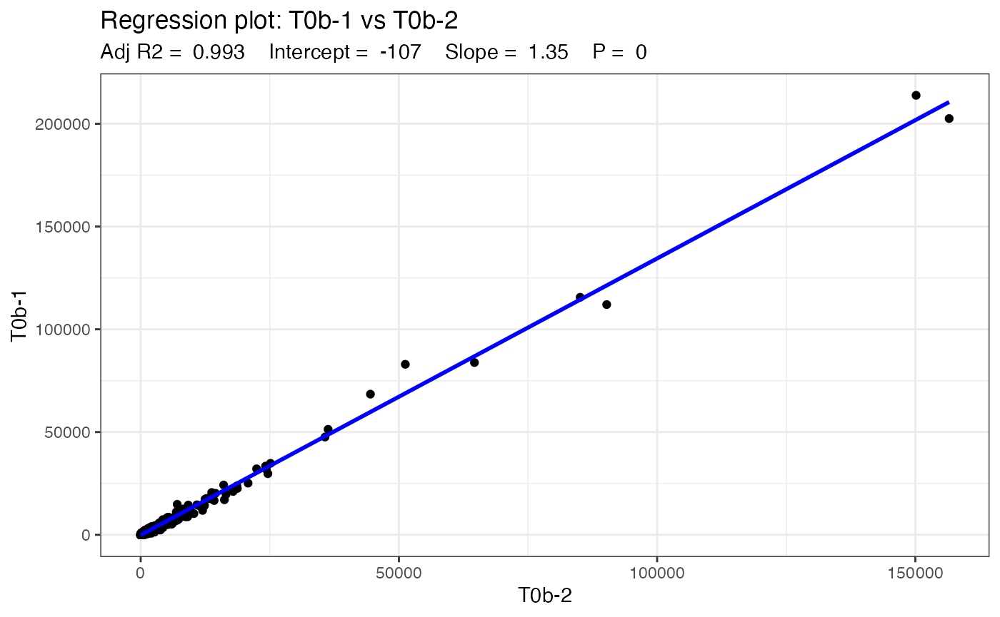
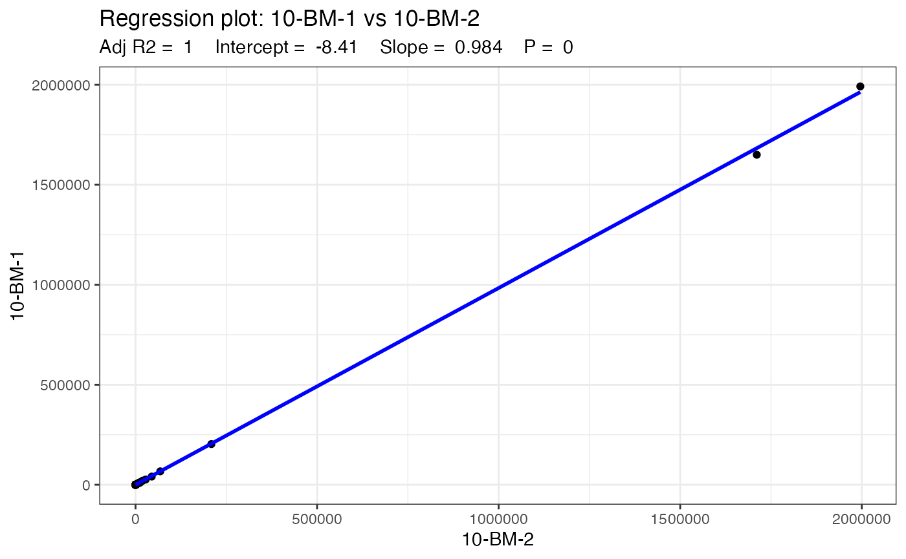
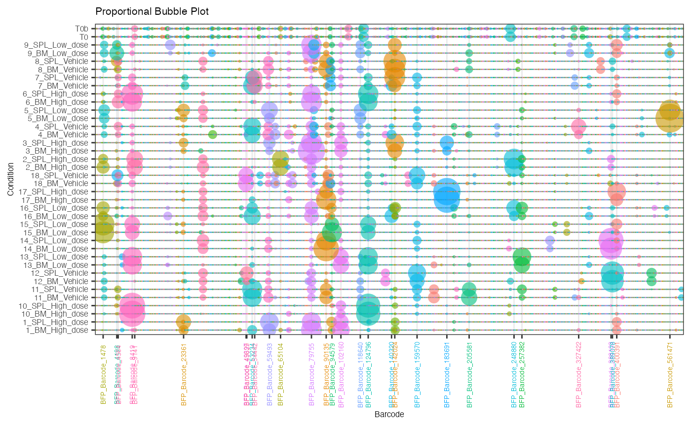
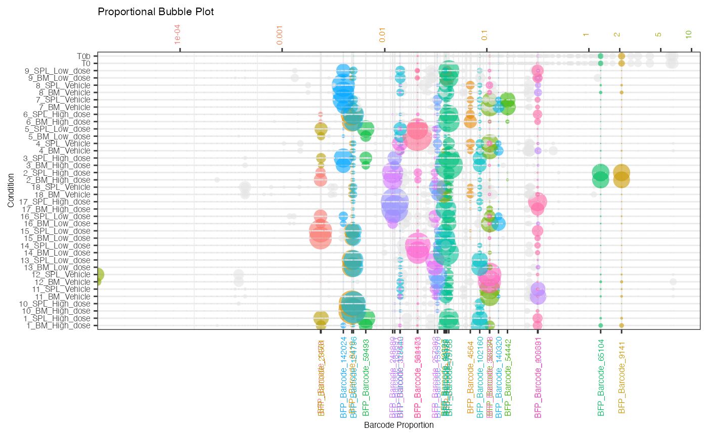
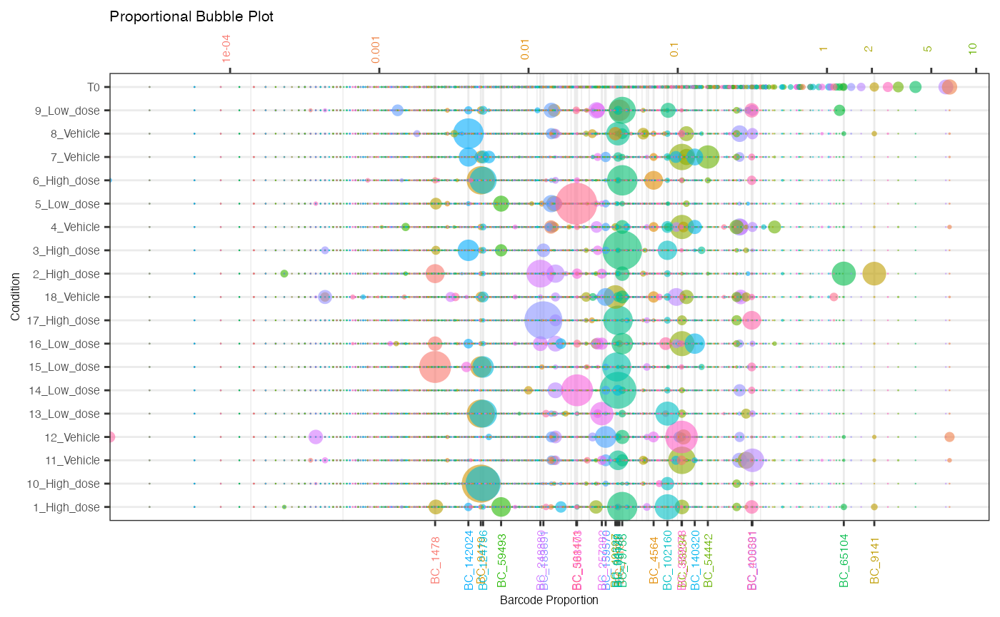

bartools: quickstart guide
Dane Vassiliadis
June 27, 2019
quickstart.RmdQuickstart Guide
Introduction
A brief introduction to DNA barcoding technology
The ability to accurately track the progeny of a clone within a population of cells is necessary to dissect biological phenomena at single cell resolution. Several technologies have emerged that enable lineage tracing in cell populations. Many of these involve the insertion or generation of a unique sequence of DNA that marks the genome of each cell and which can be tracked using high throughput sequencing technologies. These markers are often termed DNA barcodes as they essentially consist of a stretch of degenerate DNA bases which is unique to that cell. This degenerate sequence of bases affords considerable complexity to the barcode library and uniqueness to each barcode. Many current DNA barcoding methodologies utilise stretches of up to 60 bases for their barcode region allowing an astronomical theoretical number of individual barcodes to be generated from combinations of the four nucleotides that comprise DNA: adenine (A), thymine (T), guanine (G) and cytosine (C). In reality, the need to synthesize and clone these barcodes into viral vectors reduces the overall complexity that can be achieved. Nevertheless, several barcode constructs exist with barcode complexities reaching 10^6 unique barcodes or higher.
What is bartools
bartools was built out of our need to develop robust
tools for the analysis of DNA barcoding datasets in a large number of
samples. The package consists of a suite of functions to annotate,
analyse and plot DNA barcodes that are read out using common high
throughput sequencing methodologies such as those obtained from Illumina
machines. Furthermore, the rapid rise of single cell technologies has
necessitated the development of methods that can process and visualise
DNA barcode data at single cell resolution. New methods incorporate
barcode sequences into the three prime region of a reporter gene
construct that is transcribed under the direction of a constitutive
promoter. This results in transcription of the barcode which can be
detected in 3 prime single cell RNA sequencing datasets. Recent examples
of this are SPLINTR (ref), LARRY (ref) and CellTagging (ref). bartools
contains additional methods to process and visualise these datatypes
with the aim of opening up this technology to the broader scientific
community. This vignette will showcase the capabilities of the bartools
package for processing and analysing synthetic barcode information at
the bulk and single cell levels.
Getting started
The bartools package is optimised for use with SPLINTR
lineage barcode libraries (ref) however the functions within can be
adapted to any DNA barcoding methodology that utiilses random DNA
barcodes.
Load the bartools library
## Loading required package: edgeR## Loading required package: limma## Loading required package: ggplot2## Warning: package 'ggplot2' was built under R version 4.1.2A simple analysis
Here we will follow the analysis of an example experiment to understand the basic functions of bartools. Say we have a population of cells growing in culture. These cells were transduced with a lentiviral vector encoding an mCHERRY fluorescent protein and a downstream barcode in the 3’ UTR possessing the following structure:
tgaccatgtacgattgactaNNSWSNNWSWNNSWSNNWSWNNSWSNNWSWNNSWSNNWSWNNSWSNNWSWNNSWSNNWSWtgctaatgcgtactgTwo days after transduction, two sets of 5000 mCHERRY positive cells were sorted using flow cytometry into separate wells and resuspended in culture media. Genomic DNA from the cells was harvested 1 week following transduction and barcode regions were specifically amplified using PCR and sequenced for 75 cycles on an Illumina NextSeq 550 resulting in single ended fastq files containing barcoded reads.
Importing DNA barcode count data
Raw barcode count data can be thought of similarly to raw
integer-based count data from other count based experiments such as
RNA-sequencing. For these data types the edgeR package
provides an efficient DGEList object structure to store
sample counts and associated metadata. bartools makes use
of this object structure to store and process DNA barcode counts.
A real world example barcoding experiment
For this section we will make use of a DNA barcoding dataset generated in a recent study (Bell and Fennell et al. Nat Comms, 2019) that investigated the clonal diversity within populations of acute myeloid leukaemia (AML) cells cultured in the presence or absence of the BET bromodomain inhibitor IBET-151.
AML cells were cultured in vitro, barcoded using a lentiviral based
barcoding library reference SPLINTR paper here, and treated
with weekly increasing doses of IBET-151 or a corresponding vehicle
control. Barcode samples were sequenced for two biological replicates of
this experiment at the baseline timepoint, and at week 1 and week 4,
corresponding to the IC40 and IC90 of the drug respectively.
To follow along with this vignette the raw counts tables and sample
metadata can be found at
insert link here to the raw datasets
Generating a DGEList object from sample counts and metadata
Counts objects defined above can be specified in a sample metadata
sheet as shown below. This is the easiest way to generate a
DGEList object containing the count information and
metadata of interest for a set of barcode sequencing samples.
Load in the counts as specified in the samplesheet into a DGEList object
dge <- edgeR::readDGE(files = samplesheet, group = samplesheet$treatment, labels = samplesheet$sample, header = T)This results in the creation of a DGEList object containing counts and metadata information for each sample
data(test.dge)Data QC and Normalisation
Data QC
We first want to ensure that we are working with clean data. We remove barcodes that have no counts across all samples.
# Remove rows with no data
keeprows = rowSums(test.dge$counts) >= 1
dge.filtered <- test.dge[keeprows,]
dge.filtered.counts <- dge.filtered$counts
dim(dge.filtered.counts)## [1] 1639 76We then normalise samples to sequencing depth
# Normalise each sample to counts per million
dge.cpmnorm <- as.data.frame(cpm(dge.filtered.counts, normalized.lib.sizes = T))We can plot the raw and normalised sequencing depth to get an idea of depth discrepancies between PCR replicates
# raw counts per sample
plotReadCounts(dge.filtered.counts, group = dge.filtered$samples$Treatment)
# normalised counts per sample
plotReadCounts(dge.cpmnorm, group = dge.filtered$samples$Treatment)
For lentiviral based barcoding experiments, such as this one, it is common for the library to exhibit a degree of skewness based on the cloning method. This means that some barcodes are represented in the library more than others and so have a greater chance to be transduced into multiple cells. Most experiments assume that each individual barcode is transduced into only one cell, and that each cell is only transduced with one barcode.This is ensured using a low multiplicity of infection (MOI) transduction in which the likelihood that a cell is transduced with one or more barcode containing virions follows Poisson statistics. With this in mind, it also can be useful to check the total counts per barcode to identify bias in counts in sample vs. frequency of barcode in reference library.
# plot detected barcodes
plotBarcodeCounts(dge.cpmnorm, log10 = F)
plotBarcodeCounts(dge.cpmnorm, log10 = T)In this plot individual barcodes on the x-axis are ordered based on their frequency in the library pool. An increased number of counts per barcode toward the left hand side of the plot would be suggestive of transduction bias, meaning that there are more reads on average attributed to the more abundant barcodes in the library. And so, likely multiple cells were transduced with the same barcode. We don’t see this here suggesting that this is not a problem for this experiment.
Check correlation between PCR replicates
It is also important to ensure that individual samples are sequenced to an appropriate depth as this ensures that the entire barcode repertoire present in a sample is captured in the data. Sequencing technical duplicates of a sample generated at the library PCR stage is a good way to ensure this.
In our experiment we have 9 samples total, each with two PCR technical replicates. Here we correlate the barcode distributions for each pair of technical replicates.
samps <- unique(test.dge$samples$Group)
lapply(samps[1:3], function(x){
df <- test.dge[,test.dge$samples$Group %in% as.character(x)]
plotBarcodeRegression(df, samp1 = colnames(df)[[1]], samp2 = colnames(df)[[2]])
})## [[1]]## `geom_smooth()` using formula 'y ~ x'
##
## [[2]]## `geom_smooth()` using formula 'y ~ x'
##
## [[3]]## `geom_smooth()` using formula 'y ~ x' We fit a linear model to both technical replicates per sample and plot the regression line. Note that we expect a very high correlation because these are PCR duplicates of the same barcode pool. We can easily get the correlation values between replicates
corrs <- calcReplicateCorr(test.dge, group = test.dge$samples$Group, corr.thresh = 0.9)
corrs## 1_BM_High_dose 1_SPL_High_dose 10_BM_High_dose 10_SPL_High_dose
## 0.9990491 0.8948741 0.9998575 0.9997446
## 11_BM_Vehicle 11_SPL_Vehicle 12_BM_Vehicle 12_SPL_Vehicle
## 0.9988328 0.9990118 0.9992805 0.9996900
## 13_BM_Low_dose 13_SPL_Low_dose 14_BM_Low_dose 14_SPL_Low_dose
## 0.9999569 0.9999258 0.9999779 0.9996698
## 15_BM_Low_dose 15_SPL_Low_dose 16_BM_Low_dose 16_SPL_Low_dose
## 0.9998939 0.9999679 0.9998965 0.9996074
## 17_BM_High_dose 17_SPL_High_dose 18_BM_Vehicle 18_SPL_Vehicle
## 0.9998268 0.9996864 0.9995628 0.9993980
## 2_BM_High_dose 2_SPL_High_dose 3_BM_High_dose 3_SPL_High_dose
## 0.9975029 0.9973275 0.9997352 0.9998276
## 4_BM_Vehicle 4_SPL_Vehicle 5_BM_Low_dose 5_SPL_Low_dose
## 0.9975620 0.9986015 0.9999389 0.9978161
## 6_BM_High_dose 6_SPL_High_dose 7_BM_Vehicle 7_SPL_Vehicle
## 0.9994985 0.9997586 0.9997088 0.9972775
## 8_BM_Vehicle 8_SPL_Vehicle 9_BM_Low_dose 9_SPL_Low_dose
## 0.9992879 0.9989773 0.9997057 0.9993462
## T0 T0b
## 0.9983838 0.9963650
which(corrs < 0.9)## 1_SPL_High_dose
## 2As we can see there is only a single sample that does not have a R^2 correlation value over our arbitrary threshold of 0.9 (just barely misses the cutoff). We can continue since these samples look pretty good. If there were any samples with low correlation values we might consider removing them from the analysis or analysing them separately.
Collapse PCR replicates in object
Now that we know which samples are of good quality we no longer need the PCR replicate information. From this point onward its a good idea to collapse our PCR replicates.
dim(dge.filtered)## [1] 1639 76
# take the average of PCR technical duplicates within a sample
dge.filtered.collapsed <- collapseReplicates(dge.filtered, groupby = dge.filtered$samples$Group, by = "mean")## $`1_BM_High_dose`
## [1] 41 42
##
## $`1_SPL_High_dose`
## [1] 43 44
##
## $`10_BM_High_dose`
## [1] 5 6
##
## $`10_SPL_High_dose`
## [1] 7 8
##
## $`11_BM_Vehicle`
## [1] 9 10
##
## $`11_SPL_Vehicle`
## [1] 11 12
##
## $`12_BM_Vehicle`
## [1] 13 14
##
## $`12_SPL_Vehicle`
## [1] 15 16
##
## $`13_BM_Low_dose`
## [1] 17 18
##
## $`13_SPL_Low_dose`
## [1] 19 20
##
## $`14_BM_Low_dose`
## [1] 21 22
##
## $`14_SPL_Low_dose`
## [1] 23 24
##
## $`15_BM_Low_dose`
## [1] 25 26
##
## $`15_SPL_Low_dose`
## [1] 27 28
##
## $`16_BM_Low_dose`
## [1] 29 30
##
## $`16_SPL_Low_dose`
## [1] 31 32
##
## $`17_BM_High_dose`
## [1] 33 34
##
## $`17_SPL_High_dose`
## [1] 35 36
##
## $`18_BM_Vehicle`
## [1] 37 38
##
## $`18_SPL_Vehicle`
## [1] 39 40
##
## $`2_BM_High_dose`
## [1] 45 46
##
## $`2_SPL_High_dose`
## [1] 47 48
##
## $`3_BM_High_dose`
## [1] 49 50
##
## $`3_SPL_High_dose`
## [1] 51 52
##
## $`4_BM_Vehicle`
## [1] 53 54
##
## $`4_SPL_Vehicle`
## [1] 55 56
##
## $`5_BM_Low_dose`
## [1] 57 58
##
## $`5_SPL_Low_dose`
## [1] 59 60
##
## $`6_BM_High_dose`
## [1] 61 62
##
## $`6_SPL_High_dose`
## [1] 63 64
##
## $`7_BM_Vehicle`
## [1] 65 66
##
## $`7_SPL_Vehicle`
## [1] 67 68
##
## $`8_BM_Vehicle`
## [1] 69 70
##
## $`8_SPL_Vehicle`
## [1] 71 72
##
## $`9_BM_Low_dose`
## [1] 73 74
##
## $`9_SPL_Low_dose`
## [1] 75 76
##
## $T0
## [1] 1 2
##
## $T0b
## [1] 3 4The result is a clean barcode sequencing dataset ready for further investigation and visualisation.
dim(dge.filtered.collapsed)## [1] 1639 38Visualisation
bartools includes a range of visualisation options for
examining barcode-seq datasets.
Bubble plot
Sometimes a visual depiction of the data is most suitable. Here barcodes/tags are represented by bubbles aligned on a single plane. The size of the bubbles reflects the percentage abundance of each barcode within a sample
plotBarcodeBubble(dge.filtered.collapsed$counts, proportion.cutoff = 10, labels = T)## Warning: Use of `barcodes.proportional.melted$Position` is discouraged. Use
## `Position` instead.## Warning: Use of `barcodes.proportional.melted$Sample` is discouraged. Use
## `Sample` instead.## Warning: Use of `barcodes.proportional.melted$Proportion` is discouraged. Use
## `Proportion` instead.## Warning: Use of `barcodes.proportional.melted$Color` is discouraged. Use `Color`
## instead. Bubbleplots can also be ordered according to a particular sample which
can help with visual representation of large vs small clones.
Bubbleplots can also be ordered according to a particular sample which
can help with visual representation of large vs small clones.
plotOrderedBubble(dge.filtered.collapsed$counts, proportion.cutoff = 10, labels = T, orderSample = "T0", colorDominant = T)## Warning: Vectorized input to `element_text()` is not officially supported.
## Results may be unexpected or may change in future versions of ggplot2.
## value
## 1 #F8766D
## 2 #EF7F49
## 3 #E58700
## 4 #D89000
## 5 #C99800
## 6 #B79F00
## 7 #A3A500
## 8 #8AAB00
## 9 #6BB100
## 10 #39B600
## 11 #00BA38
## 12 #00BD5F
## 13 #00BF7D
## 14 #00C097
## 15 #00C0AF
## 16 #00BFC4
## 17 #00BCD8
## 18 #00B7E9
## 19 #00B0F6
## 20 #00A7FF
## 21 #619CFF
## 22 #9590FF
## 23 #B983FF
## 24 #D376FF
## 25 #E76BF3
## 26 #F564E3
## 27 #FD61D1
## 28 #FF62BC
## 29 #FF67A4
## 30 #FE6E8A
plotOrderedBubble(dge.filtered.collapsed$counts, proportion.cutoff = 10, labels = T, orderSample = "T0", colorDominant = F)## Warning: Vectorized input to `element_text()` is not officially supported.
## Results may be unexpected or may change in future versions of ggplot2.
## value
## 1 #F8766D
## 2 #EF7F49
## 3 #E58700
## 4 #D89000
## 5 #C99800
## 6 #B79F00
## 7 #A3A500
## 8 #8AAB00
## 9 #6BB100
## 10 #39B600
## 11 #00BA38
## 12 #00BD5F
## 13 #00BF7D
## 14 #00C097
## 15 #00C0AF
## 16 #00BFC4
## 17 #00BCD8
## 18 #00B7E9
## 19 #00B0F6
## 20 #00A7FF
## 21 #619CFF
## 22 #9590FF
## 23 #B983FF
## 24 #D376FF
## 25 #E76BF3
## 26 #F564E3
## 27 #FD61D1
## 28 #FF62BC
## 29 #FF67A4
## 30 #FE6E8ABarcode Plot
Alternatively, we can focus in on the most abundant barcodes within a set of samples to more easily observe how these change in frequency over the course of an experiment.
plotBarcodeHistogram(dge.filtered.collapsed$counts, sample = dge.filtered.collapsed$samples$Group[[5]], top = 50)
Timeseries Plots
For timecourse experiments it is useful to visualise the kinetics of barcode diversity changes over time
plotBarcodeTimeseries(dge.filtered.collapsed$counts[,dge.filtered.collapsed$samples$Treatment %in% c("T0", "T0b", "High_dose")])## Using barcode as id variables
Principal Components Analysis
A global level PCA analysis is a good way to get a high level understanding of the similarities and differences between samples.
plotBarcodePCA(dge.filtered.collapsed, intgroup = "Treatment")
plotBarcodePCA(dge.filtered.collapsed, intgroup = "Days.post.transplant")
plotBarcodePCA(dge.filtered.collapsed[,dge.filtered.collapsed$samples$Treatment %in% c("Vehicle","High_dose")],
intgroup = "Treatment")
Heatmaps
plotBarcodeHeatmap(dge.filtered.collapsed$counts[,dge.filtered.collapsed$samples$Treatment %in% c("T0", "Vehicle","High_dose")],
N = 10)
Analysing composition and Diversity
Its important to not only be able to visualise the data but also understand relationships between barcodes/tags at the data level
Diversity analysis
We can examine diversity in a few different ways. - Shannon - Simpson / Inverse Simpson - Gini Each will be most applicable in different circumstances, however the Shannon diversity index is widely used to compare global diversity amongst populations of barcoded cells.
diversity <- calcDivIndexes(dge.filtered.collapsed$counts)
diversity## name shannon simpson invsimpson gini
## 1 1_BM_High_dose 2.348595 0.8444003 6.426747 0.9949996
## 2 1_SPL_High_dose 2.001465 0.8284925 5.830648 0.9965445
## 3 10_BM_High_dose 1.225780 0.6032511 2.520486 0.9981074
## 4 10_SPL_High_dose 1.282495 0.6237454 2.657775 0.9980995
## 5 11_BM_Vehicle 2.651924 0.8814260 8.433552 0.9931528
## 6 11_SPL_Vehicle 2.612696 0.8773157 8.151003 0.9932131
## 7 12_BM_Vehicle 2.414033 0.8399949 6.249800 0.9944159
## 8 12_SPL_Vehicle 1.975093 0.7878168 4.712908 0.9966086
## 9 13_BM_Low_dose 2.019197 0.8131725 5.352531 0.9962177
## 10 13_SPL_Low_dose 1.782993 0.7863460 4.680465 0.9969834
## 11 14_BM_Low_dose 1.519874 0.6814167 3.138896 0.9977556
## 12 14_SPL_Low_dose 1.649022 0.7185783 3.553387 0.9975320
## 13 15_BM_Low_dose 1.832136 0.7746698 4.437931 0.9969018
## 14 15_SPL_Low_dose 1.968970 0.7992445 4.981184 0.9966000
## 15 16_BM_Low_dose 2.778791 0.9048391 10.508519 0.9926007
## 16 16_SPL_Low_dose 2.775384 0.9152104 11.793902 0.9926858
## 17 17_BM_High_dose 1.534413 0.6789847 3.115116 0.9977005
## 18 17_SPL_High_dose 1.470677 0.6586215 2.929300 0.9978718
## 19 18_BM_Vehicle 3.153732 0.9327037 14.859650 0.9890862
## 20 18_SPL_Vehicle 3.007952 0.9171418 12.068804 0.9903285
## 21 2_BM_High_dose 2.256218 0.8510409 6.713251 0.9954351
## 22 2_SPL_High_dose 2.151088 0.8297710 5.874441 0.9959422
## 23 3_BM_High_dose 1.798233 0.6916675 3.243252 0.9967539
## 24 3_SPL_High_dose 1.948116 0.8111747 5.295901 0.9967190
## 25 4_BM_Vehicle 3.122387 0.9318059 14.664035 0.9894761
## 26 4_SPL_Vehicle 2.951425 0.9092126 11.014738 0.9907801
## 27 5_BM_Low_dose 1.704952 0.6350916 2.740414 0.9967332
## 28 5_SPL_Low_dose 2.189318 0.8374113 6.150488 0.9958768
## 29 6_BM_High_dose 1.855001 0.7799122 4.543641 0.9966369
## 30 6_SPL_High_dose 1.751253 0.7581414 4.134647 0.9970428
## 31 7_BM_Vehicle 2.605078 0.8891045 9.017500 0.9937932
## 32 7_SPL_Vehicle 2.477120 0.8562283 6.955470 0.9942559
## 33 8_BM_Vehicle 2.599803 0.8583799 7.061143 0.9931803
## 34 8_SPL_Vehicle 2.509579 0.8397073 6.238587 0.9937056
## 35 9_BM_Low_dose 2.747539 0.8980367 9.807451 0.9927207
## 36 9_SPL_Low_dose 2.610095 0.8762272 8.079322 0.9935631
## 37 T0 5.503885 0.9851023 67.124565 0.8362930
## 38 T0b 5.459133 0.9838119 61.773857 0.8370697
qplot(diversity$name, diversity$shannon) + theme_bw() + coord_flip()
Comparing abundance
We can statistically test for barcodes / tags that are over / underrepresented in a group of samples relative to another using the internal edgeR framework. bartools contains a convenience wrapper for this functionality
diff.bc <- compareAbundance(dge.filtered.collapsed,
condition = dge.filtered.collapsed$samples$Treatment,
condition_names = c("Vehicle", "High_dose"))## Disp = 10.41275 , BCV = 3.2269
diff.bc## logFC logCPM PValue
## BFP_Barcode_59493 16.789323797 14.320332841 7.257376e-08
## BFP_Barcode_245016 -8.375485841 10.929286123 3.130938e-06
## BFP_Barcode_58978 -5.070279436 13.700282477 4.480032e-06
## BFP_Barcode_135438 -10.020449400 12.862564246 4.741687e-06
## BFP_Barcode_67201 10.862414897 10.808746466 5.612130e-06
## BFP_Barcode_289568 -10.233487643 3.839406668 5.920289e-06
## BFP_Barcode_324711 -15.994758295 11.490638725 1.184537e-05
## BFP_Barcode_49629 -18.734119236 13.264999864 1.368374e-05
## BFP_Barcode_23361 13.004118245 13.486485423 1.369035e-05
## BFP_Barcode_183691 13.518700044 17.501372247 1.448972e-05
## BFP_Barcode_44350 -8.690466710 4.250563776 1.826579e-05
## BFP_Barcode_114027 -9.420605880 3.968231525 4.302471e-05
## BFP_Barcode_1478 8.795824531 14.762801225 4.868448e-05
## BFP_Barcode_23544 -16.810379154 11.729689195 5.355873e-05
## BFP_Barcode_215831 -8.752522669 2.423986982 8.814421e-05
## BFP_Barcode_500780 -14.308940442 12.905185199 1.243854e-04
## BFP_Barcode_388103 9.063067346 13.591444774 1.413240e-04
## BFP_Barcode_65104 7.962290241 15.995241071 1.849984e-04
## BFP_Barcode_93485 -8.610959093 13.063870629 1.956483e-04
## BFP_Barcode_55858 -5.747362297 7.054353153 2.172537e-04
## BFP_Barcode_389078 -6.370987757 15.472990614 2.337788e-04
## BFP_Barcode_576338 -6.906437805 5.556467456 4.131642e-04
## BFP_Barcode_9141 7.466576182 15.939641407 4.284759e-04
## BFP_Barcode_102160 4.062612442 15.628826032 5.523578e-04
## BFP_Barcode_400391 5.203827005 16.004594020 5.630271e-04
## BFP_Barcode_205581 -5.624643893 13.920399126 6.145862e-04
## BFP_Barcode_52081 -10.937244382 4.527771478 6.345585e-04
## BFP_Barcode_425129 -8.181379442 5.438607746 7.983592e-04
## BFP_Barcode_248880 9.098500103 16.528417862 9.763395e-04
## BFP_Barcode_71582 12.769442188 6.879066606 9.768020e-04
## BFP_Barcode_468335 -14.148473166 7.718893101 9.780093e-04
## BFP_Barcode_43535 -6.169665015 5.531601507 1.008102e-03
## BFP_Barcode_94511 5.618524911 10.934809458 1.265730e-03
## BFP_Barcode_69605 15.009681681 8.578866567 1.462405e-03
## BFP_Barcode_14377 -8.977454563 2.632487804 1.622487e-03
## BFP_Barcode_108059 -4.396804346 5.240278176 1.825635e-03
## BFP_Barcode_561471 6.645755560 6.440456644 1.968591e-03
## BFP_Barcode_238160 -10.377216277 3.979543193 1.997467e-03
## BFP_Barcode_84350 10.068324883 12.229117214 2.114813e-03
## BFP_Barcode_36103 -5.194186194 9.489042360 2.195616e-03
## BFP_Barcode_398459 10.245966726 3.846884930 2.252675e-03
## BFP_Barcode_111828 10.217448209 3.817382144 2.453429e-03
## BFP_Barcode_428803 -7.415623388 1.229863116 2.597373e-03
## BFP_Barcode_49397 -5.430012919 12.500142503 2.764638e-03
## BFP_Barcode_22294 10.804808017 7.314668722 2.934987e-03
## BFP_Barcode_8419 4.443740474 16.611182139 3.030342e-03
## BFP_Barcode_47726 -10.163983533 11.156914836 3.808522e-03
## BFP_Barcode_336794 -7.766754146 1.531273091 3.858797e-03
## BFP_Barcode_41066 10.840266051 4.432393411 3.953345e-03
## BFP_Barcode_10293 -9.327411939 5.999420706 3.984531e-03
## BFP_Barcode_550404 -11.967193829 5.546742939 4.024912e-03
## BFP_Barcode_12923 8.992000339 2.642827620 4.236308e-03
## BFP_Barcode_4198 -3.595209321 10.128632161 4.858506e-03
## BFP_Barcode_91412 -6.256177532 12.027512498 5.033536e-03
## BFP_Barcode_124796 4.097127164 16.445645918 5.182931e-03
## BFP_Barcode_92584 -5.630009851 5.085455361 5.471799e-03
## BFP_Barcode_79755 3.148911922 17.276558788 5.755774e-03
## BFP_Barcode_258799 -9.491786315 3.119802594 6.424264e-03
## BFP_Barcode_588849 -10.422189909 6.235115960 6.900472e-03
## BFP_Barcode_68618 11.016419976 10.738281895 6.940164e-03
## BFP_Barcode_806 -5.406532708 6.141127050 7.070594e-03
## BFP_Barcode_127981 11.819494942 7.469942903 7.173024e-03
## BFP_Barcode_416495 8.769451792 2.859005712 7.317136e-03
## BFP_Barcode_5472 5.255501391 9.966449348 7.351241e-03
## BFP_Barcode_280320 -8.343671955 2.046950116 7.382336e-03
## BFP_Barcode_635211 -7.437972976 10.662754034 7.786632e-03
## BFP_Barcode_82758 -7.132581420 9.504599921 7.874064e-03
## BFP_Barcode_20263 -8.606771978 2.288204923 8.128009e-03
## BFP_Barcode_346627 -8.369621973 2.069600090 8.231890e-03
## BFP_Barcode_207651 -6.398444892 0.429622564 8.530924e-03
## BFP_Barcode_62602 -6.089601342 11.552056524 8.553479e-03
## BFP_Barcode_398530 8.602442148 2.280638035 8.712443e-03
## BFP_Barcode_408928 -11.350137035 4.935515009 8.917499e-03
## BFP_Barcode_223832 -11.775728178 5.356226245 9.035258e-03
## BFP_Barcode_146666 -5.539571484 -0.143175268 9.259641e-03
## BFP_Barcode_9376 -7.325574553 1.158014162 9.521923e-03
## BFP_Barcode_226861 -7.178188475 1.036143481 9.530707e-03
## BFP_Barcode_125776 7.900919012 9.553234635 9.770349e-03
## BFP_Barcode_1870 -10.798974381 4.393018956 1.038965e-02
## BFP_Barcode_79026 -10.301532377 3.906216296 1.056963e-02
## BFP_Barcode_140320 -4.979509425 12.505772277 1.072337e-02
## BFP_Barcode_18278 -7.730778492 1.500929753 1.097851e-02
## BFP_Barcode_459545 -7.446106909 5.731244699 1.154904e-02
## BFP_Barcode_21051 7.442495956 1.246567286 1.227534e-02
## BFP_Barcode_159570 -3.045072122 15.324188534 1.277707e-02
## BFP_Barcode_292621 -7.247926153 1.090318126 1.279486e-02
## BFP_Barcode_3618 -5.382528721 1.513430186 1.280922e-02
## BFP_Barcode_120505 -6.180175705 1.657869560 1.327992e-02
## BFP_Barcode_535770 -6.702875381 0.656152028 1.547562e-02
## BFP_Barcode_43045 8.473094798 3.357546977 1.549371e-02
## BFP_Barcode_235343 -6.342437195 0.387317651 1.582210e-02
## BFP_Barcode_42310 -8.318733146 2.022233182 1.616680e-02
## BFP_Barcode_491099 -10.756850867 4.351048253 1.682840e-02
## BFP_Barcode_23213 -10.606520010 4.203463836 1.757075e-02
## BFP_Barcode_65241 6.597485866 7.566639921 1.769583e-02
## BFP_Barcode_22981 -6.866221660 4.009051644 1.775431e-02
## BFP_Barcode_76877 -8.421463951 2.114728930 1.807138e-02
## BFP_Barcode_320233 -8.328774118 2.027923615 1.829227e-02
## BFP_Barcode_142999 -8.106402166 1.830471696 1.853949e-02
## BFP_Barcode_78912 -7.866688108 4.870589666 1.882557e-02
## BFP_Barcode_19146 5.224409737 10.543598697 1.932250e-02
## BFP_Barcode_342846 -7.607092198 2.777031303 1.950646e-02
## BFP_Barcode_179997 7.301956345 6.143051846 1.964121e-02
## BFP_Barcode_363879 -6.286282184 10.606253733 1.977250e-02
## BFP_Barcode_487549 -9.866999932 3.484742292 1.986296e-02
## BFP_Barcode_279397 -7.401483262 1.217687105 2.023353e-02
## BFP_Barcode_175871 -5.105250506 2.177958327 2.031652e-02
## BFP_Barcode_23522 -4.680100532 1.719959249 2.078420e-02
## BFP_Barcode_189813 -6.973266693 3.167095785 2.112256e-02
## BFP_Barcode_53234 -3.288983344 15.674368264 2.125323e-02
## BFP_Barcode_18345 -6.002568381 0.148619311 2.181516e-02
## BFP_Barcode_472019 -5.836020477 0.041405548 2.201432e-02
## BFP_Barcode_1139 6.543101090 0.515367651 2.215855e-02
## BFP_Barcode_78349 -5.971048182 11.102451641 2.257848e-02
## BFP_Barcode_21013 4.029514959 8.820533124 2.332170e-02
## BFP_Barcode_49071 -10.191081089 3.795931574 2.361670e-02
## BFP_Barcode_280253 -8.961529844 2.620720767 2.410559e-02
## BFP_Barcode_65784 -6.971857544 0.864359487 2.482455e-02
## BFP_Barcode_189854 -5.549286446 -0.136213207 2.592449e-02
## BFP_Barcode_62394 -8.513475411 2.204267844 2.648242e-02
## BFP_Barcode_101581 -6.991784382 4.254284458 2.761115e-02
## BFP_Barcode_234390 -6.853752426 0.771565642 2.797227e-02
## BFP_Barcode_74018 -6.755302344 0.700075554 2.842357e-02
## BFP_Barcode_168818 -6.586571096 0.564925822 2.848885e-02
## BFP_Barcode_310257 -6.929320798 0.829504937 2.901127e-02
## BFP_Barcode_327422 -3.777826647 11.578984005 3.050328e-02
## BFP_Barcode_30946 4.024067205 10.671531734 3.124838e-02
## BFP_Barcode_319910 -6.424120919 0.444977710 3.125898e-02
## BFP_Barcode_381245 -6.322655892 0.373970204 3.225345e-02
## BFP_Barcode_323670 -3.159892846 4.967540960 3.263842e-02
## BFP_Barcode_119800 6.579504369 1.581172945 3.290082e-02
## BFP_Barcode_446739 -6.089242237 5.094945732 3.300679e-02
## BFP_Barcode_283177 -5.857283730 0.057821344 3.330239e-02
## BFP_Barcode_23363 -8.411448300 2.103470811 3.335968e-02
## BFP_Barcode_50136 -5.279578076 -0.295330480 3.412683e-02
## BFP_Barcode_86358 -6.290241121 0.341450865 3.438791e-02
## BFP_Barcode_229891 -7.461275834 1.273501632 3.473225e-02
## BFP_Barcode_175651 -5.423190128 1.044247761 3.489198e-02
## BFP_Barcode_596728 -8.171048762 1.883663865 3.724140e-02
## BFP_Barcode_235837 -7.125914078 0.994824460 3.805198e-02
## BFP_Barcode_557872 -7.912592540 1.652504765 3.810854e-02
## BFP_Barcode_119418 -3.704237222 3.829896631 3.817649e-02
## BFP_Barcode_203520 -5.720783306 -0.033117143 3.887442e-02
## BFP_Barcode_316204 -6.178304643 6.588419755 3.896022e-02
## BFP_Barcode_12367 -7.649876593 1.425227264 3.896325e-02
## BFP_Barcode_379419 -7.080494805 0.956730907 3.898990e-02
## BFP_Barcode_290265 6.594255829 7.073478881 4.016869e-02
## BFP_Barcode_195523 -7.209440854 1.062498275 4.047798e-02
## BFP_Barcode_69627 -5.520297518 1.139795733 4.054039e-02
## BFP_Barcode_168530 -5.104383222 -0.390035608 4.134003e-02
## BFP_Barcode_1180 -5.781312893 0.007478651 4.192767e-02
## BFP_Barcode_344050 -4.451813357 3.895712408 4.217300e-02
## BFP_Barcode_410172 -4.432225797 1.571360643 4.257955e-02
## BFP_Barcode_120596 -5.460222159 -0.191256987 4.294738e-02
## BFP_Barcode_426662 -5.471829285 -0.185733974 4.460102e-02
## BFP_Barcode_92275 -5.339196263 -0.257717926 4.581190e-02
## BFP_Barcode_147380 -6.379509064 4.078328913 4.653642e-02
## BFP_Barcode_15782 -7.142193715 0.996251917 4.676805e-02
## BFP_Barcode_556149 -4.132115304 0.764363486 4.847377e-02
## BFP_Barcode_10934 -6.326822727 1.578130398 4.894694e-02
## BFP_Barcode_92942 -3.903985643 3.391310039 4.913278e-02
## BFP_Barcode_172626 -3.424886925 12.876323763 4.947968e-02
## BFP_Barcode_4072 5.618742377 0.771684860 5.092673e-02
## BFP_Barcode_11270 7.188080231 4.354545297 5.118766e-02
## BFP_Barcode_54416 -6.165616016 0.265496615 5.122952e-02
## BFP_Barcode_462102 -5.807766693 3.489225130 5.227123e-02
## BFP_Barcode_77209 -5.707716661 9.049719909 5.235500e-02
## BFP_Barcode_142719 -6.995833583 3.356441490 5.285686e-02
## BFP_Barcode_4061 -5.346616324 0.757645434 5.303877e-02
## BFP_Barcode_211828 -6.515024282 0.514025254 5.321386e-02
## BFP_Barcode_166467 -6.410254689 0.437981567 5.483118e-02
## BFP_Barcode_114040 -6.028158522 1.634116240 5.589960e-02
## BFP_Barcode_40856 -5.138147843 2.683880546 5.606175e-02
## BFP_Barcode_36539 -4.733212421 -0.572054826 5.618675e-02
## BFP_Barcode_517468 -6.617879838 6.322253062 5.737317e-02
## BFP_Barcode_84931 -4.901830681 -0.491905135 5.856552e-02
## BFP_Barcode_225586 -6.803978591 2.370999346 5.879590e-02
## BFP_Barcode_25560 -5.461175883 8.195883961 5.912920e-02
## BFP_Barcode_355420 -4.350601160 3.131648921 5.994544e-02
## BFP_Barcode_227308 -4.790353015 0.789968178 6.045931e-02
## BFP_Barcode_29284 -4.951027538 -0.469827158 6.190466e-02
## BFP_Barcode_189714 -5.042549897 -0.425561845 6.197960e-02
## BFP_Barcode_71813 -5.612032852 -0.096846855 6.217797e-02
## BFP_Barcode_516753 -4.924668782 -0.482702821 6.299804e-02
## BFP_Barcode_60720 -6.561777766 3.579268181 6.538171e-02
## BFP_Barcode_229995 -4.564959736 -0.646847179 6.655108e-02
## BFP_Barcode_206193 -5.825365486 0.022848231 6.655144e-02
## BFP_Barcode_389087 -4.592855611 -0.634772538 6.660896e-02
## BFP_Barcode_81579 -3.567123815 10.503954921 6.702846e-02
## BFP_Barcode_40516 -4.655284054 -0.607466822 6.795563e-02
## BFP_Barcode_354350 -4.877009921 0.412234577 6.826624e-02
## BFP_Barcode_85441 -5.633262536 -0.089629712 6.892521e-02
## BFP_Barcode_430 -5.734903531 2.207752545 6.948361e-02
## BFP_Barcode_329679 -6.069790440 10.286590480 7.013064e-02
## BFP_Barcode_420967 -5.732956271 2.682571706 7.041737e-02
## BFP_Barcode_77131 8.201206546 11.202396909 7.087881e-02
## BFP_Barcode_83707 -3.787376030 7.898338072 7.330083e-02
## BFP_Barcode_54442 -4.277741111 13.729572227 7.799560e-02
## BFP_Barcode_181554 -4.746692572 5.156140817 8.021221e-02
## BFP_Barcode_357977 -4.880080751 6.197865279 8.116191e-02
## BFP_Barcode_415460 -5.527152655 8.716318084 8.608304e-02
## BFP_Barcode_72619 -5.093124506 -0.402292224 8.644393e-02
## BFP_Barcode_7299 -5.395611489 1.907317354 8.664418e-02
## BFP_Barcode_168353 6.499626307 4.817720536 9.007589e-02
## BFP_Barcode_194917 -3.940545409 -0.891487788 9.038081e-02
## BFP_Barcode_88284 4.936330634 1.014055973 9.331318e-02
## BFP_Barcode_94579 -1.760811947 10.706838952 9.335601e-02
## BFP_Barcode_173736 -4.091772448 -0.828598522 9.385048e-02
## BFP_Barcode_45747 -3.330625746 6.369436808 9.507993e-02
## BFP_Barcode_277060 4.013641943 5.952721072 9.587047e-02
## BFP_Barcode_11030 -4.579761352 -0.639869012 9.598902e-02
## BFP_Barcode_252374 -4.308419942 -0.053071126 9.601712e-02
## BFP_Barcode_190956 -3.960467685 -0.588103170 9.708428e-02
## BFP_Barcode_348320 4.735137148 3.166895873 9.854890e-02
## BFP_Barcode_16339 4.565200870 4.490014581 1.006762e-01
## BFP_Barcode_67370 -4.438319616 -0.700697911 1.017376e-01
## BFP_Barcode_71820 -4.443899714 0.604879026 1.035071e-01
## BFP_Barcode_276866 -4.795930001 4.564417870 1.050976e-01
## BFP_Barcode_476380 -4.364787781 3.480665361 1.051718e-01
## BFP_Barcode_325065 -4.292367518 1.724526373 1.070378e-01
## BFP_Barcode_121651 -2.991246242 3.644640542 1.155890e-01
## BFP_Barcode_95364 5.493692770 8.614456658 1.189932e-01
## BFP_Barcode_495859 -4.682893956 2.480792061 1.223366e-01
## BFP_Barcode_118640 -2.081041712 13.079557962 1.242183e-01
## BFP_Barcode_37363 4.512970257 2.309715778 1.274522e-01
## BFP_Barcode_103528 -4.172337021 -0.805073575 1.285430e-01
## BFP_Barcode_11277 -3.753503798 1.625275795 1.289951e-01
## BFP_Barcode_209726 -6.018764047 7.412605009 1.324353e-01
## BFP_Barcode_55960 -5.029572232 9.558211481 1.367121e-01
## BFP_Barcode_133178 -5.932796351 7.569874441 1.399951e-01
## BFP_Barcode_157906 -3.794398806 -0.930472905 1.419690e-01
## BFP_Barcode_142112 2.282616074 12.551148136 1.420238e-01
## BFP_Barcode_1607 -1.977285103 12.577561007 1.444384e-01
## BFP_Barcode_88464 -4.943458566 5.813899452 1.468743e-01
## BFP_Barcode_30785 4.143130377 4.220543089 1.501690e-01
## BFP_Barcode_138900 3.987559294 7.759591631 1.514556e-01
## BFP_Barcode_145403 -3.349585124 0.768784804 1.516080e-01
## BFP_Barcode_242383 -3.811628337 6.559666389 1.537204e-01
## BFP_Barcode_149935 -5.491858787 9.853875472 1.555901e-01
## BFP_Barcode_560839 -3.203948447 8.979451365 1.574471e-01
## BFP_Barcode_219379 -3.573745920 3.583533029 1.595830e-01
## BFP_Barcode_260611 3.415150524 7.597538443 1.656349e-01
## BFP_Barcode_72612 -3.027721233 2.201926663 1.748896e-01
## BFP_Barcode_366637 3.642166175 0.747134779 1.765332e-01
## BFP_Barcode_17608 -2.724930571 5.196874674 1.792065e-01
## BFP_Barcode_257523 3.426429586 -0.609847382 1.815499e-01
## BFP_Barcode_51932 -2.829572316 2.084512575 1.927158e-01
## BFP_Barcode_23918 -4.660331475 4.686727023 1.952310e-01
## BFP_Barcode_595478 3.104511437 8.568560058 1.975100e-01
## BFP_Barcode_46538 -3.122641630 2.431602779 1.981928e-01
## BFP_Barcode_4469 -5.760988047 10.719871307 1.993987e-01
## BFP_Barcode_261055 -3.292739453 0.686866649 1.997367e-01
## BFP_Barcode_521264 -3.592370976 1.590281206 2.079471e-01
## BFP_Barcode_43123 -3.216531185 4.292264212 2.129900e-01
## BFP_Barcode_67965 -2.640829591 3.431677637 2.140864e-01
## BFP_Barcode_94093 -4.658425032 6.023970203 2.153108e-01
## BFP_Barcode_47439 -3.164378298 -0.147183696 2.213854e-01
## BFP_Barcode_41692 -2.988669193 0.649006288 2.224616e-01
## BFP_Barcode_244020 -3.456785764 4.390228969 2.277155e-01
## BFP_Barcode_409898 -2.914994130 -1.163933927 2.336165e-01
## BFP_Barcode_90135 1.769848625 16.329554074 2.362955e-01
## BFP_Barcode_16618 -2.752937249 2.476895724 2.374548e-01
## BFP_Barcode_93884 -2.646529003 2.156618335 2.387836e-01
## BFP_Barcode_24510 -1.908690762 5.647431174 2.401341e-01
## BFP_Barcode_248159 2.866037586 1.587163519 2.457758e-01
## BFP_Barcode_204266 -3.354014266 3.430196087 2.553270e-01
## BFP_Barcode_17509 -2.447875707 6.379167969 2.575792e-01
## BFP_Barcode_21422 -1.809746478 8.822890567 2.632439e-01
## BFP_Barcode_433045 -3.163016209 6.434489566 2.659768e-01
## BFP_Barcode_31610 1.700116727 15.573262642 2.744701e-01
## BFP_Barcode_3733 -3.611562497 4.367942564 2.751044e-01
## BFP_Barcode_68847 1.350243216 13.068861483 2.818044e-01
## BFP_Barcode_206263 3.622228337 1.710121307 2.865281e-01
## BFP_Barcode_133927 -3.202959798 2.192484583 2.928049e-01
## BFP_Barcode_203989 1.353347493 10.453953875 2.949701e-01
## BFP_Barcode_206798 -2.512089496 -0.158298658 3.032813e-01
## BFP_Barcode_83680 -1.983537231 2.228853151 3.093721e-01
## BFP_Barcode_383329 -3.827806012 8.618802086 3.163255e-01
## BFP_Barcode_201372 -2.320403883 -0.128806653 3.245919e-01
## BFP_Barcode_283335 -2.885857197 4.454830246 3.336574e-01
## BFP_Barcode_314343 -2.970494768 6.466015360 3.374296e-01
## BFP_Barcode_107820 -2.436312331 3.367378672 3.382230e-01
## BFP_Barcode_214604 -2.226614926 0.615604777 3.561806e-01
## BFP_Barcode_447550 -2.092511350 7.986992447 3.643474e-01
## BFP_Barcode_32325 -2.408609906 0.981647850 3.665900e-01
## BFP_Barcode_154696 2.672649649 0.391932301 3.707121e-01
## BFP_Barcode_2596 -2.546223484 1.853038101 3.880552e-01
## BFP_Barcode_121663 2.787676808 1.057229719 3.884631e-01
## BFP_Barcode_190202 1.241140723 10.767358756 4.037028e-01
## BFP_Barcode_15740 2.193826086 -0.057323056 4.160943e-01
## BFP_Barcode_509744 -2.588326044 4.023319332 4.214866e-01
## BFP_Barcode_7249 -2.071500469 3.615149757 4.240278e-01
## BFP_Barcode_194823 -1.855872982 10.830057660 4.337748e-01
## BFP_Barcode_62970 -1.433303361 9.441467269 4.351924e-01
## BFP_Barcode_547590 -2.557172166 3.958518491 4.362220e-01
## BFP_Barcode_244320 2.387000113 10.602171270 4.387550e-01
## BFP_Barcode_162898 2.267310783 0.818718483 4.422230e-01
## BFP_Barcode_16956 -2.108269809 -0.005981454 4.461881e-01
## BFP_Barcode_236573 -2.194674449 3.131747324 4.544090e-01
## BFP_Barcode_345889 1.467351064 11.881804461 4.619947e-01
## BFP_Barcode_109730 -2.047266623 5.461735302 4.782911e-01
## BFP_Barcode_357846 1.776814064 -0.268620895 4.786489e-01
## BFP_Barcode_129562 1.892270221 3.263361103 4.833473e-01
## BFP_Barcode_1396 -1.631130900 2.317056148 4.912207e-01
## BFP_Barcode_297704 -1.199048013 10.742057950 5.029984e-01
## BFP_Barcode_122618 -1.845647020 8.631402537 5.062543e-01
## BFP_Barcode_257906 1.803747295 1.747577946 5.077056e-01
## BFP_Barcode_154806 -1.157509053 4.512508441 5.163860e-01
## BFP_Barcode_23241 0.937449155 11.839606466 5.284190e-01
## BFP_Barcode_2040 1.600806041 -0.031989827 5.401984e-01
## BFP_Barcode_4564 0.828131669 13.485940309 5.618548e-01
## BFP_Barcode_111272 -1.050973616 2.841398000 5.902299e-01
## BFP_Barcode_71801 -1.566387566 7.720153068 5.910781e-01
## BFP_Barcode_47310 -0.708866351 9.593862374 6.033229e-01
## BFP_Barcode_257382 1.033244456 14.041673470 6.102396e-01
## BFP_Barcode_38465 -1.312119634 3.799516022 6.249528e-01
## BFP_Barcode_131650 1.352219635 5.113970226 6.263921e-01
## BFP_Barcode_345717 1.515509309 0.439983658 6.292727e-01
## BFP_Barcode_147063 1.241368690 0.218680981 6.336881e-01
## BFP_Barcode_266451 -0.793393614 5.760423278 6.465231e-01
## BFP_Barcode_38589 -1.156965399 1.780713087 6.469612e-01
## BFP_Barcode_61500 -0.984025276 5.422830720 6.528306e-01
## BFP_Barcode_528062 1.103767466 0.156253623 6.648409e-01
## BFP_Barcode_258340 -1.247446800 -0.276356843 6.718959e-01
## BFP_Barcode_2294 -1.052079003 -0.510787922 6.855148e-01
## BFP_Barcode_251167 -0.975393247 9.408697741 6.973636e-01
## BFP_Barcode_142024 0.670147717 16.054646800 7.172407e-01
## BFP_Barcode_100236 1.113941704 5.055686212 7.173808e-01
## BFP_Barcode_447595 -0.833901973 0.202515689 7.229770e-01
## BFP_Barcode_346124 1.077513566 -0.274513765 7.409568e-01
## BFP_Barcode_10397 0.771510942 -0.871828487 7.507506e-01
## BFP_Barcode_124622 0.984522420 5.958507452 7.577896e-01
## BFP_Barcode_140952 0.653075020 8.885070679 7.888896e-01
## BFP_Barcode_83363 0.487830849 1.548641019 7.962065e-01
## BFP_Barcode_229324 0.850510914 10.226536983 7.970499e-01
## BFP_Barcode_201293 -0.568548320 6.066944391 8.048524e-01
## BFP_Barcode_187931 0.492976169 2.751739472 8.163883e-01
## BFP_Barcode_164378 -0.551408260 1.596494569 8.418058e-01
## BFP_Barcode_141060 -0.561182575 0.199058741 8.464125e-01
## BFP_Barcode_4531 -0.314182585 12.734111128 8.564142e-01
## BFP_Barcode_70225 0.498201476 11.898832320 8.851819e-01
## BFP_Barcode_389742 -0.283218617 0.767784339 8.983600e-01
## BFP_Barcode_617554 -0.266476117 -0.554203355 9.064456e-01
## BFP_Barcode_176655 -0.288447484 5.895967699 9.134232e-01
## BFP_Barcode_128266 0.308938203 0.031153714 9.270702e-01
## BFP_Barcode_35792 -0.230841638 0.597838465 9.449767e-01
## BFP_Barcode_4173 0.095122200 12.038542564 9.501495e-01
## BFP_Barcode_35704 -0.134029027 1.715796214 9.590614e-01
## BFP_Barcode_138906 -0.125354475 8.714772114 9.652838e-01
## BFP_Barcode_38398 0.079563080 4.345892263 9.678096e-01
## BFP_Barcode_440712 -0.087511884 4.571218550 9.755205e-01
## BFP_Barcode_292962 -0.004117466 7.124894985 9.983459e-01
## BFP_Barcode_289383 -0.004054566 0.598674081 1.000000e+00Linegraphs of barcode abundance - NOT WORKING
plotAbundanceLines(dge.filtered.collapsed, condition = dge.filtered.collapsed$samples$group, condition_names = c("Vehicle","High_dose"), plot_type = 'counts')